データは作って終わりじゃない。増やしたり・書き換えたり・消したり——
INSERT・UPDATE・DELETE で、データを自由に変更してみましょう✏️
DBMS（データベースを管理するソフト）が持つ基本機能は、次の 4つだけ。それぞれの頭文字を取って CRUD（クラッド）と呼ばれます。
データの作成や更新を行う前には、データベースを バックアップしておきましょう。バックアップとは、データを別のファイルにコピーして保管しておくこと。
操作を間違えたときや、不慮の事故でデータが消えてしまったとき、バックアップしたファイルを使って もとの状態に戻せます。もとに戻すことを レストア（restore）といいます。
.backup でバックアップする対象は、いま操作しているデータベース。sqlite3 sample.db で起動していれば sample.db が対象になります。
次のコマンドで sample.db を sample.back という名前でバックアップします。
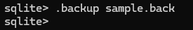
.backup を実行（表示が出なければ成功）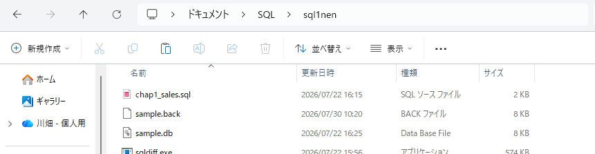
sql1nen フォルダにファイルができたか確認.backup を実行して何も表示されなければ、バックアップファイルの作成に成功しています。作業用の sql1nen フォルダを開いて、ファイルがあるか確認しましょう。
SQLite はデータベースがファイルとして保存されます。そのため、エクスプローラーやファインダーなどの操作でファイルを複製し、バックアップを作ることも可能です。
しかしその方法だと、SQLite を終了させないと復元できません。.backup コマンドなら SQLite を起動させたまま復元できるため、コマンドを使ったバックアップがおすすめです。
データベースにデータを作成するときは INSERT文を使います。INSERT には「挿入」という意味があり、「データの作成」を「データの挿入」と表現することもあります。
INSERT INTO のあとにデータを作成したいテーブルを指定します。次にカッコの中にカラム名を「,」で区切って入れ、最後に VALUES のあとのカッコに入れたい値を「,」で区切って入れます。列挙したカラム名と値の順番は連動させる必要があります。
.sql ファイルの中身はすべてテキストデータです。Windows では メモ帳、macOS では テキストエディットで開けます。Windows なら、①ファイル名を右クリック →②［プログラムから開く］→③［メモ帳］をクリック。
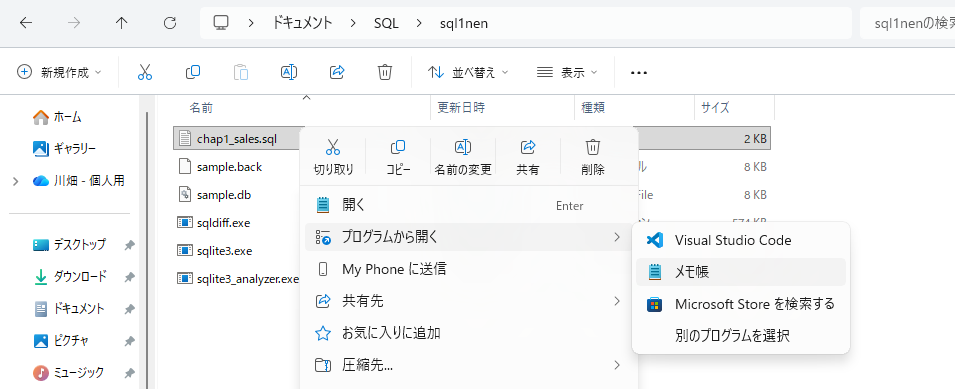
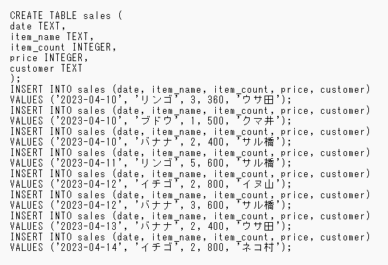
最初の7行は sales テーブルを作る SQL文で、8〜23行目が INSERT文。1件のデータごとに INSERT文を1回実行しています。カラム名と値を列挙すると1つの SQL文が長くなるため、改行して2行に分けています。
1行目のカッコ内が値を入れる カラム名、2行目のカッコ内が各カラムに入れる 値です。カラムの順番と値の順番は対応関係にあり、対応するカラムに値が入ります。順番が一致しないと 意図しないカラムに値が入ってしまうので注意しましょう。
INSERT文でデータの追加に成功すると 何も表示されません。そこで、続けて SELECT文を実行してテーブルの中身を確認します。
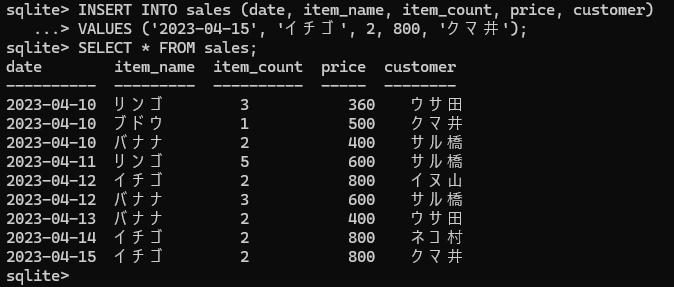
INSERT文で すべてのカラムに値を入れる場合、カラム名は省略できます。省略するときは、テーブルのカラムの数だけ、カラムの順番にあわせて値を列挙します。
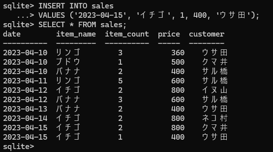
カラム名を指定する INSERT文では、誤って NULL値が入ってしまうことがあります。特別な理由がない限りは、カラム名を省略した書き方がおすすめです。
▼ NULL値が生まれる例：カラム名に customer がなく、値も1つ足りない INSERT文
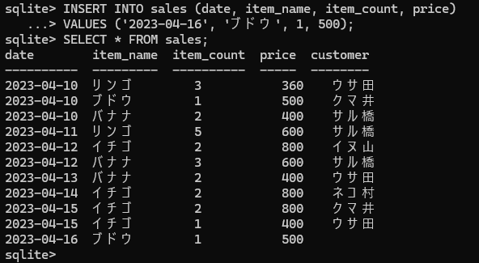
customer の欄が空（NULL値）になっている▼ カラム名を省略すれば入れ漏れを防げる：値が足りないと エラーになる
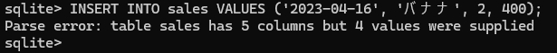
Parse エラーは、SQL文の構文に誤りがあると発生するエラー。メッセージは「sales テーブルには5つのカラムがあるが、指定された値は4つ」という意味です。カラム名を省略するときは、カラムの数と値の数を一致させる必要があります。あえて NULL値を入れたい場合以外は、カラム名を省略した INSERT文を作りましょう。
COUNT 関数を使うと、レコードの件数を数えられます。引数に「*」を指定すると すべてのレコード件数を数えますが、カラム名を引数にすると NULL値以外の値が入ったレコード数を数えます。
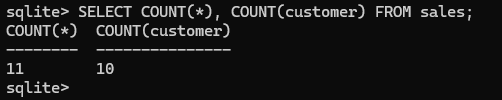
COUNT(*) と COUNT(customer) で件数が変わる（NULL は数えない）指定したカラムに NULL値が入っているかは、IS NULL 演算子で調べられます。WHERE句でカラム名のあとに IS NULL と書きます。
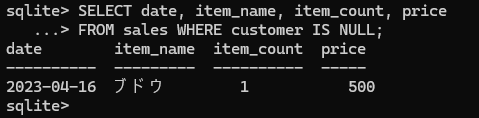
customer が NULL のレコードだけを取り出せたSQLite はテキストファイルから読み込んだ SQL文を実行できます。SQL文の働きが分かるようにしたいときに使うのが コメント機能。/* から */ の範囲は コメントと呼ばれ、SQL文の一部とは見なされません。注釈を付けたいときに利用しましょう。
ここまでの状態を sample2.back としてバックアップしてから、.restore で sample.back の状態に戻します。実行後、SELECT文で復元されたか確認します。
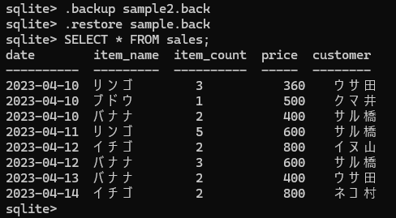
sample.back の状態に復元されたすでにあるデータを 書き換えるには UPDATE文を使います。
UPDATE のあとに更新したいテーブルを指定。SET のあとに更新したいカラム名と入れたい値を「＝」でつなぎます。ふつう「＝」は左辺と右辺が同じか判定する働きですが、SET の「＝」は 左辺のカラムに右辺の値を入れる働きになります。そして最後に WHERE句を付けます。
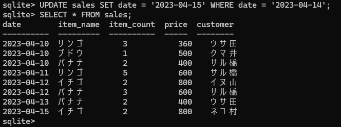
date が「2023-04-14 → 2023-04-15」に更新された更新するデータの条件は date カラムが「2023-04-14」のレコード。SET 句で date カラムに「2023-04-15」を指定しています。
SET 句を「,」で区切ると、複数の値を同時に更新できます。
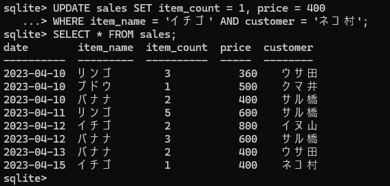
item_count と price が同時に更新された更新対象の条件は、item_name が「イチゴ」かつ customer が「ネコ村」。SET句により、対象レコードの item_count が「1」、price が「400」に更新されます。
UPDATE文では、WHERE句で更新する条件を指定します。条件の指定を忘れると、SET句で指定したカラムの値が全て同じになってしまいます。
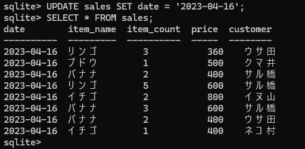
date が「2023-04-16」になってしまった😱.restore sample.back で、変更する前の状態に戻しておこう。だから操作の前に必ずバックアップしておくんだね🐻データを削除するための SQL文は DELETE文。SELECT文と同じように FROM 句で削除したいテーブルを指定し、WHERE 句で削除したいデータの条件を指定します。
次の DELETE文は、date カラムが「2023-04-10」のレコードが削除対象です。
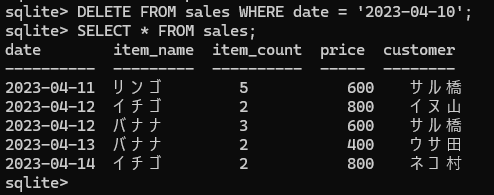
削除するレコードをしぼりたい場合は、WHERE句で 複数の条件式を組み合わせます。
DELETE文で WHERE句を使わなかった場合、すべてのレコードが削除されます。
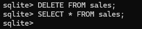
SELECT を実行しても何も表示されないのは、テーブルが空っぽである証拠。WHERE句がないと全て削除されるので、付け忘れないよう注意しましょう。
最後は、テーブルそのものを削除する DROP TABLE（ドロップ テーブル）文。DROP TABLE に続けて、削除したいテーブル名を指定します。
次の DROP TABLE文を実行すると sales テーブルが削除されます。実行後、.tables コマンドでテーブルの一覧を表示させます。
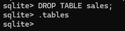
.tables に何も出ない＝テーブルが1つもない.tables を実行しても何も表示されないということは、テーブルが1つもないということ。DROP TABLE文もデータを削除する機能の1つで、テーブルを削除できます。最後に、レストアして変更する前の状態に戻しておきましょう。
おつかれさまでした🎉 第4章では、データを 作る・書き換える・消す 操作を学びました。大事な言葉とSQL文を並べておきます。
.backup しておくのが安全のコツです。